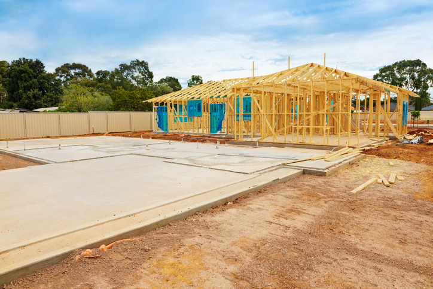

New Building?
If you are building a new house or require a new power supply, you must seek approval before connecting to the local power network. Network approval is intended to ensure the following: The connection is made to the correct supply point, There is legal access to the network, Network capacity is sufficient, Fusing is available.

How do I book a Connection?
You will need to complete a network application form to have a new installation connected to the Aurora network. This process provides you with an ICP number that is essential for the next step.
Contact an Energy Retailer to set up an account.
Your Energy Retailer will authorise the connection of your new installation or temporary power supply. It is important to get your application in to your local network as early as possible in the building process. Don't wait until construction is complete before contacting them.
Have your electrician contact IEIO for the high-risk mains inspection. We can arrange the revenue meter installation to coincide with our inspection.